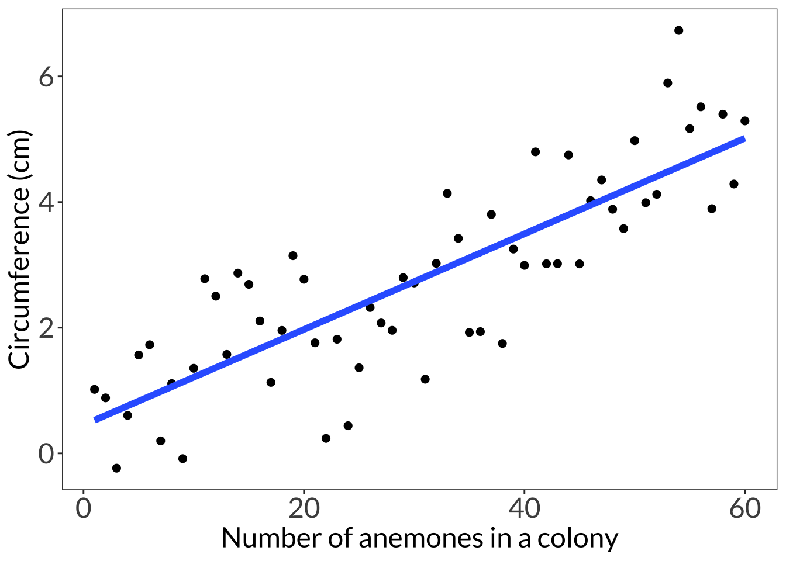
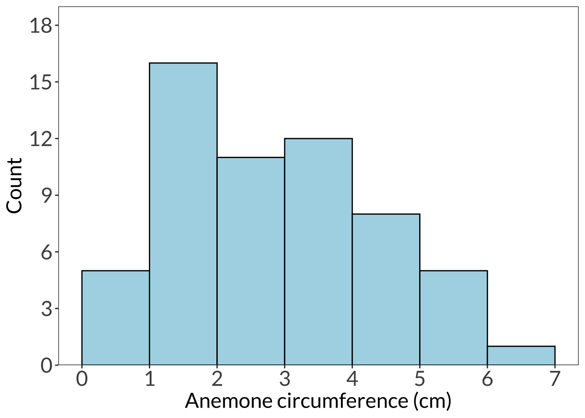
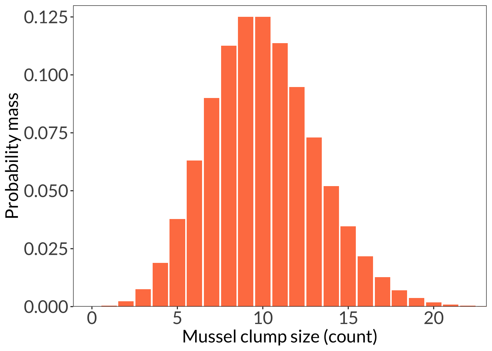
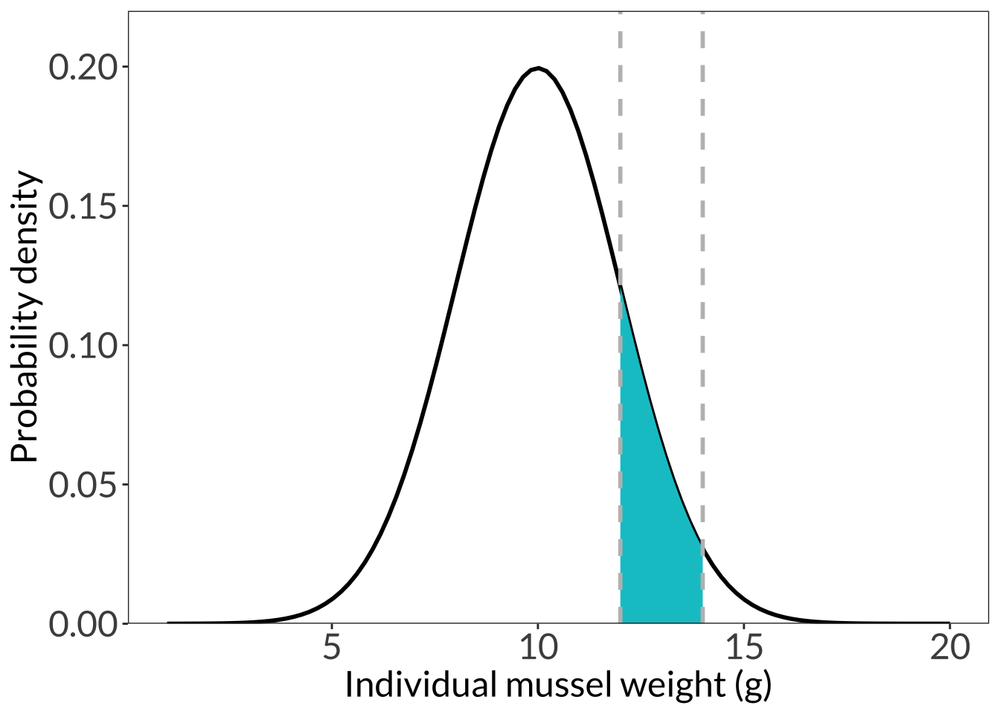

Code
# cleaning
library(tidyverse)
# visualization
library(showtext)
font_add_google("Lato", "Lato")# cleaning
library(tidyverse)
# visualization
library(showtext)
font_add_google("Lato", "Lato")# number of anemones in a clump
clump <- seq(from = 1, to = 60, by = 1)
# circumference: anemones can be up to 8 cm long
set.seed(10)
circ <- rnorm(length(clump), mean = seq(from = 1, to = 5, length = length(clump)), sd = 1)
# create a data frame
df <- cbind(circ, clump) %>%
as.data.frame()
# linear model
lm(circ ~ clump, data = df) %>% summary()
Call:
lm(formula = circ ~ clump, data = df)
Residuals:
Min 1Q Median 3Q Max
-1.88621 -0.62425 0.06147 0.58350 2.17217
Coefficients:
Estimate Std. Error t value Pr(>|t|)
(Intercept) 0.451168 0.236422 1.908 0.0613 .
clump 0.076068 0.006741 11.285 2.91e-16 ***
---
Signif. codes: 0 '***' 0.001 '**' 0.01 '*' 0.05 '.' 0.1 ' ' 1
Residual standard error: 0.9042 on 58 degrees of freedom
Multiple R-squared: 0.6871, Adjusted R-squared: 0.6817
F-statistic: 127.3 on 1 and 58 DF, p-value: 2.914e-16showtext_auto()
ggplot(df, aes(x = clump, y = circ)) +
geom_point(size = 2) +
# just using geom smooth for the purposes of visualization
geom_smooth(method = "lm", se = FALSE, linewidth = 2) +
labs(x = "Number of anemones in a colony", y = "Circumference (cm)") +
theme_bw() +
theme(panel.grid = element_blank(),
axis.text = element_text(size = 18),
axis.title = element_text(size = 18),
text = element_text(family = "Lato"))`geom_smooth()` using formula = 'y ~ x'
ggplot(df, aes(x = circ)) +
scale_x_continuous(breaks = seq(from = 0, to = 7, by = 1)) +
scale_y_continuous(expand = c(0, 0), limits = c(0, 19), breaks = seq(from = 0, to = 18, by = 3)) +
geom_histogram(breaks = seq(from = 0, to = 7, by = 1), color = "#000000", fill = "lightblue") +
labs(x = "Anemone circumference (cm)", y = "Count") +
theme_bw() +
theme(panel.grid = element_blank(),
axis.text = element_text(size = 18),
axis.title = element_text(size = 18),
text = element_text(family = "Lato")) 
ggplot(data.frame(x = 1:55), aes(x)) +
stat_function(geom = "bar", n = 55, fun = dpois, args = list(lambda = 10), fill = "coral") +
scale_y_continuous(expand = c(0, 0), limits = c(0, 0.13)) +
coord_cartesian(xlim = c(0, 22)) +
labs(x = "Mussel clump size (count)", y = "Probability mass") +
theme_bw() +
theme(panel.grid = element_blank(),
axis.text = element_text(size = 18),
axis.title = element_text(size = 18),
text = element_text(family = "Lato")) 
ggplot(data.frame(x = 1:20), aes(x)) +
stat_function(geom = "line", n = 100, fun = dnorm, args = list(mean = 10, sd = 2), linewidth = 1) +
stat_function(geom = "area", fun = dnorm, args = list(mean = 10, sd = 2), xlim = c(12, 14), fill = "turquoise3") +
geom_vline(xintercept = 12, lty = 2, color = "grey", linewidth = 1) +
geom_vline(xintercept = 14, lty = 2, color = "grey", linewidth = 1) +
scale_y_continuous(expand = c(0, 0), limits = c(0, 0.22)) +
# coord_cartesian(xlim = c(0, 22)) +
labs(x = "Individual mussel weight (g)", y = "Probability density") +
theme_bw() +
theme(panel.grid = element_blank(),
axis.text = element_text(size = 18),
axis.title = element_text(size = 18),
text = element_text(family = "Lato")) 
showtext_auto(FALSE)@online{bui2023,
author = {Bui, An},
title = {Lecture 01 Figures},
date = {2023-04-03},
url = {https://an-bui.github.io/ES-193DS-W23/lecture/lecture-01_2023-04-03.html},
langid = {en}
}